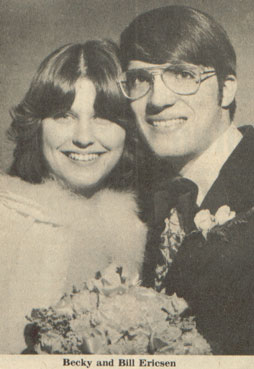
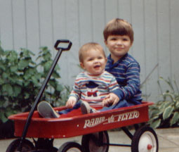

| Rebecca Jamie Brown, who went by Becky, was born to Sylvia and Jim Brown. Becky attended the University of Wisconsin-Madison, majoring in English and Secondary Education. She married Bill Ericsen January 8th, 19?? in Fort Atkinson, WI. |

|
|

|
Becky and Bill had two children together, Ben and Tim. |